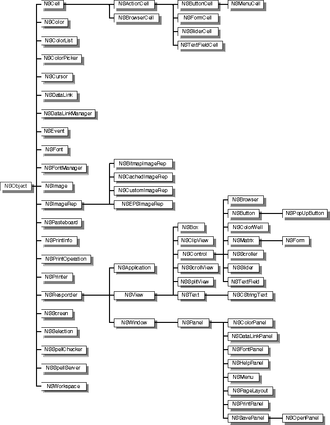

1
Application Kit
Introduction
The Application Kit defines Objective C classes, protocols, C functions, constants, and data types that are designed to be used by virtually every OpenStep application. The principal aim of the Application Kit is to provide the framework for implementing a graphical, event-driven application.
Classes
The Application Kit contains over sixty classes which inherit directly or indirectly from NSObject, the root class defined in the Foundation Kit. The following diagram shows the inheritance relationship among these classes. After the diagram, the specifications for these classes are arranged in alphabetical order.
